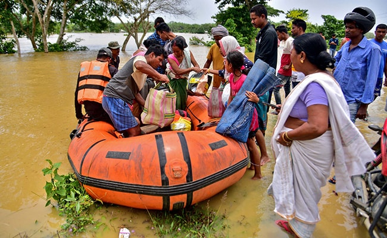
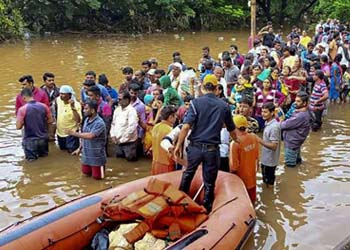
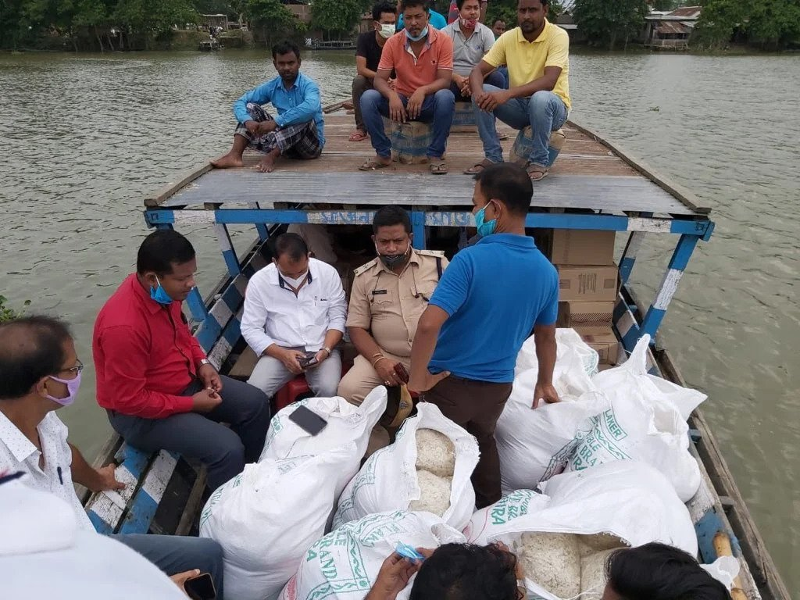
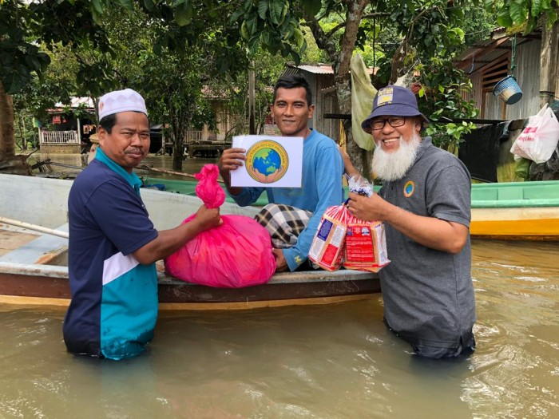

Assam is one of the most disaster prone states in India. Every monsoon, over 80% of the state is flooded with neck-deep water flowing from the mighty Brahmaputra and its tributaries.
Assam reeling under massive floods. The Floods have widely damaged the houses, farm lands, schools, bridges and road links across Assam. Lakhs of people have been affected and thousands of families are forced to take shelter on schools, highways and temporary relief camps.
Our team is on the ground, providing urgent support to the affected people. The need for food, drinking water and medical assistance is enormous. We request you to come forward and support our appeal. Assam Needs your help. Please make a donation now.
The Sparks Foundation is actively working with the flood affected communities in Assam. Please check our project photos below.
   Insipre
Innovate
Integrate